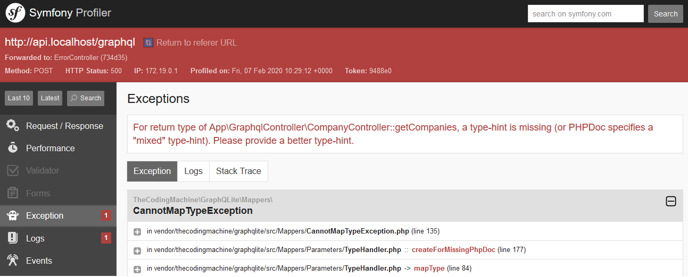
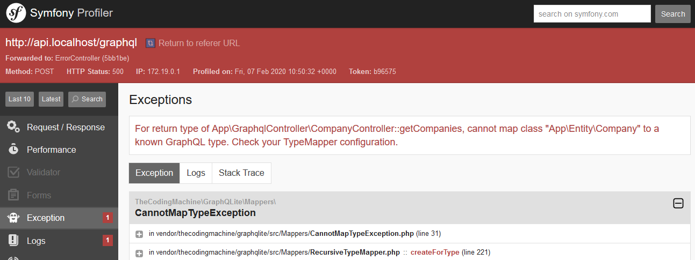
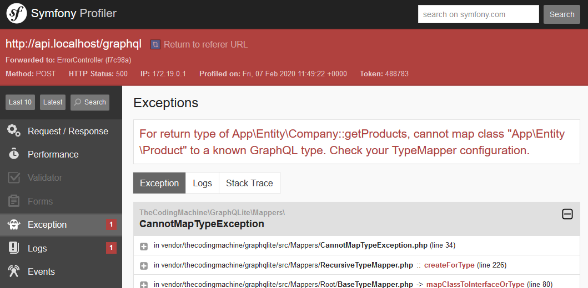
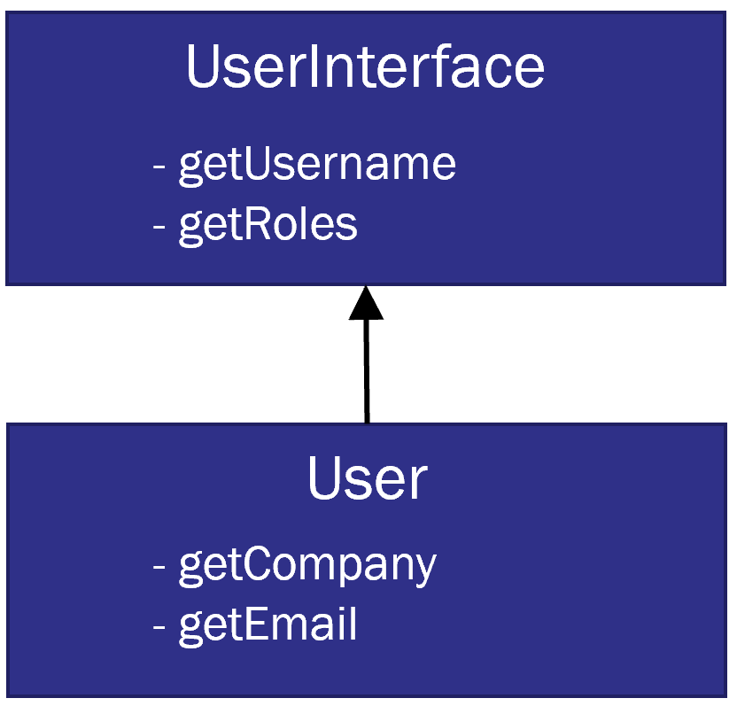

This project contains the code to be downloaded by PHP UK Conference participants at the GraphQLite workshop.
In order to install the project, start by cloning it.
This repository contains several branches:
step0 is where you startstep2 to step8 contain the workshop work at various stagesmaster is the final result at the end of the workshopStart with branch "step0":
$ git checkout step0
The repository provides a docker-compose.yml to set up the environment quickly.
You will need Docker to start this project:
$ docker-compose up
The images might take some time to download, be patient.
When you start the containers, a number of commands will run automatically!
composer install is executedCheck the docker-compose.yaml file for more details.
You should have several containers started:
We will be playing with a "marketplace".
Users in our application belong to companies. A company is selling products. A product can have any number of options attached to it.
At the beginning of the workshop, the project contains 4 entities:
UserCompanyProductOptionThere are 4 Doctrine repositories matching these entities.
The Symfony security has been set up correctly (the User implements Symfony's UserInterface, the security.yaml file has been configured).
GraphQLite has already been installed with a single command:
$ composer require thecodingmachine/graphqlite-bundle
Some PHP code was already written, in particular, the Doctrine entities and repositories are already written.
Let's write our first query: the list of companies.
In the src/GraphqlController/CompanyController.php file, add a getCompanies method:
use TheCodingMachine\GraphQLite\Annotations\Query;
/**
* @Query()
*/
public function getCompanies(?string $search)
{
return $this->companyRepository->search($search)->getArrayResult();
}
Pay attention to the @Query annotation and to the use statement.
When working with GraphQLite, you will deal with a lot of annotations. It is therefore very important to have an IDE
that can autocomplete these annotations for you.
The Symfony GraphQLite bundle comes with GraphiQL, a GraphQL web-ide.
Browse to http://api.localhost/graphiql
... and you should see an error!

For return type of App\GraphqlController\CompanyController::getCompanies, a type-hint is missing (or PHPDoc specifies a "mixed" type-hint). Please provide a better type-hint.
GraphQL is a strictly typed protocol.
PHP is optionally typed only. Since GraphQLite job is to map PHP types to GraphQL types, we will need to be explicit
and provide types in all annotated methods.
/**
* @Query()
+ * @return Company[]
*/
public function getCompanies(?string $search)
{
return $this->companyRepository->search($search)->getArrayResult();
}
Note: since PHP does not have "generics" support, we need to add a docblock with the @return annotation to specify
the type of the array. GraphQLite will read the docblocks.
So... browse again to http://api.localhost/graphiql
... and you should see another error!

For return type of App\GraphqlController\CompanyController::getCompanies, cannot map class "App\Entity\Company" to a known GraphQL type. Check your TypeMapper configuration.
We told GraphQLite to expose the Company class, but we did not allow the Company class to be exposed as a GraphQL
type. We need to explicitly allow the class to be exposed, and every field in the class.
Go to src/Entity/Company.php. Add a @Type annotation in the class docblock and a @Field annotation
in getId(), getName() and getWebsite() docblock:
use TheCodingMachine\GraphQLite\Annotations\Field;
use TheCodingMachine\GraphQLite\Annotations\Type;
/**
* @Type()
* @ORM\Entity(repositoryClass="App\Repository\CompanyRepository")
*/
class Company
{
// ...
/**
* @Field()
*/
public function getId(): ?int
{
return $this->id;
}
/**
* @Field()
*/
public function getName(): ?string
{
return $this->name;
}
/**
* @Field()
*/
public function getWebsite(): ?string
{
return $this->website;
}
// ...
}
A few things to notice:
use statement for the annotation@Field annotation is meant to be applied on a getter (or any method), but cannot be applied on a property.Browse again to http://api.localhost/graphiql
... success!
You can now type your first GraphQL query!
{
companies(search: "a") {
id
name
}
}
Try to add another field and see if this works:
{
companies(search: "a") {
id
name
website
}
}
This example is a bit basic. It does not unleash the full potential of GraphQL.
Let's add a new field "products" to query the products linked to a company:
/**
* @Field()
* @return Product[]
*/
public function getProducts()
{
return $this->products;
}
Browse again to http://api.localhost/graphiql
... another error!

For return type of App\Entity\Company::getProducts, cannot map class "App\Entity\Product" to a known GraphQL type. Check your TypeMapper configuration.
Of course, GraphQLite does not know how to map the Product class.
Exercise:
Add @Type annotations on every entity and @Field annotations on every getters.
Play with the GraphQL queries, try to build a complex query like this:
query companiesContainingA {
companies(search: "a") {
id
name
products {
name
price
vat
options {
name
}
}
users {
username
}
}
}
Note: the example above declares an "operation name" for the query (companiesContainingA)
In GraphiQL IDE, you can have many operations in the same page. When you press the play button, you can select the
operation that will be executed.
Note: if you did not complete the exercise in step 0, you can jump to the solution by changing your current branch:
$ git checkout step2
In this second step, we are going to add pagination on our list of companies.
At this point, you should already be able to add pagination by your own. Since GraphQLite turns function parameters
into GraphQL arguments, we could simply write:
/**
* @Query()
* @return Company[]
*/
public function getCompanies(?string $search, int $limit = 10, int $offset = 0)
{
// ...
}
But we can do better!
GraphQLite has native support for a pagination interface called "beberlei/porpaginas". Any iterator implementing
the Porpaginas\Result interface will have native pagination. And good news, there is a class adapting Doctrine
queries to Porpaginas.
If you want Porpaginas support, the first thing to do is add Porpaginas to your project:
$ composer require beberlei/porpaginas
(no need to do this in the test project, it comes with Porpaginas installed)
The next step is to return an object that implements the Porpaginas\Result interface:
src/GraphqlController/CompanyController.php
use Porpaginas\Doctrine\ORM\ORMQueryResult;
/**
* @Query()
* @return ORMQueryResult|Company[]
*/
public function getCompanies(?string $search): ORMQueryResult
{
return new ORMQueryResult($this->companyRepository->search($search));
}
The ORMQueryResult class is an adapter between a Doctrine Query or QueryBuilder class and a Porpaginas instance.
Pay a close attention to the docblock: @return ORMQueryResult|Company[].
We instruct GraphQLite that the returned value is both:
ORMQueryResult instance (that implements Porpaginas\Result interface)Company instancesGraphQLite will understand that and enable pagination on companies for us automatically.
But we are not done yet. So far, $companyRepository->search() returns an array of companies, while ORMQueryResult
expects a Doctrine Query or QueryBuilder instance.
Edit the src/Repository/CompanyRepository.php file:
src/Repository/CompanyRepository.php
public function search(?string $search): Query
{
return $this->createQueryBuilder('c')
->andWhere('c.name LIKE :val')
->orWhere('c.website LIKE :val')
->setParameter('val', '%'.$search.'%')
->orderBy('c.id', 'ASC')
->getQuery()
;
}
Notice how the method now returns a query.
We are all set up! Let's go to GraphiQL and try our query.
query companies {
companies(search: "") {
items(limit:10, offset: 0) {
id
name
}
count
}
}
Notice how the structure changed:
The companies query does not return the list of companies directly anymore. Instead, it returns an object with 2 fields:
items(limit: Int, offset:Int): use this field to paginate the companiescount: use this field to get the total count of companiesNote: if you did not complete the exercise in step 2, you can jump to the solution by changing your current branch:
$ git checkout step3
GraphQLite can integrate with any framework security module.
Our Symfony's project security was already set up using the bin/console make:user command.
Navigate to GraphiQL: http://api.localhost/graphiql.
You probably already noticed there is a me query available. It comes out of the box with the Symfony's GraphQLite bundle.
query me {
me {
userName
roles
}
}
Actually, there is also a login and a logout mutation you can use.
A mutation is just like a query, expect it changes the state of your application. If we made a comparison with HTTP methods,
queries would be similar to GET and mutations would be similar to POST/PUT/DELETE.
Let's login:
mutation login {
login(userName:"user1@example.com", password:"password") {
userName
}
}
Now, try to run the "me" query again. You should get the "user1" user information.
Congratulations, you are logged in!
Take a look at the User entity.
It has many fields declared:
/**
* @Type()
* @ORM\Entity(repositoryClass="App\Repository\UserRepository")
*/
class User implements UserInterface, Serializable
{
// ...
/**
* @Field()
*/
public function getCompany(): ?Company
{
return $this->company;
}
}
Yet, in the me query, we cannot query the "company" field.
Try running this query:
query me {
me {
userName
roles
company {
id
name
}
}
}
You will see this error:
Cannot query field "company" on type "SymfonyUserInterface". Did you mean to use an inline fragment on "User"?

The explanation is simple. The me query provided returns a Symfony's UserInterface.
class MeController
{
// ...
/**
* @Query()
*/
public function me(): ?UserInterface { /*...*/ }
}
However, the Symfony user interface does not have a getCompany field. Only the App\Entity\User class has that method.
Hopefully, GraphQL comes with a notion of interfaces that can be applied on types. When a query or a field returns
an interface, you can tap into the concrete type fields using what we call a "fragment".
query me {
me {
userName
roles
... on User {
id
company {
id
name
}
}
}
}
"... on User" marks the beginning of the fragment.
Basically, it tells GraphQL that is the user returned by me is a User instance, then you can fetch the additional
fields specified inside the fragment.
Let's create a query that lists all users:
src/GraphqlController/UserController.php
class UserController
{
// ...
/**
* @Query()
* @return ORMQueryResult|User[]
*/
public function users(?string $search)
{
return new ORMQueryResult($this->userRepository->search($search));
}
}
We might want to restrict this query to the "admin" user.
In Symfony, users are attributed "roles".
In our test environment, the 'admin' has been granted a "ROLE_ADMIN" role (you can see that in the src/DataFixtures/AppFixtures.php file).
To restrict a query (or a field) to a given role, you can use the @Right annotation:
use TheCodingMachine\GraphQLite\Annotations\Right;
/**
* @Query()
+ * @Right("ROLE_ADMIN")
* @return ORMQueryResult|User[]
*/
public function users(?string $search)
In GraphiQL, try to run this query:
query users {
users {
items(limit: 10) {
id
email
}
}
}
You should see this error message:
You do not have sufficient rights to access this field
Now, login as the admin user:
mutation login {
login(userName:"admin@example.com", password:"password") {
userName
}
}
Try running the users operation again in GraphiQL. This time, you should see the users list!
Exercise:
Try putting the @Right annotation on the Product.margin field and see if you can access it.
Note: unlike in a REST API where you protect only the entry point, in GraphQL, you have to protect your model directly.
The security annotations (like @Right, @Logged or @Security) must be applied not only on controllers, but also
on all the exposed fields in your model.
The @Right annotation is only useful if you want to apply the same rule on all the
instances of a given type.
But sometimes, security must be managed in a more flexible way.
Let's have a look at our marketplace. A company can have many users.
Users have mail addresses.
Let's say I want my users to be able to see only their colleagues' mail addresses:
To do this, GraphQLite comes with a @Security annotation.
Edit your User.php file:
use TheCodingMachine\GraphQLite\Annotations\Security;
/**
* @Field()
* @Security("this.getCompany() == user.getCompany()", failWith=null)
*/
public function getEmail(): ?string
{
return $this->email;
}
As usual, pay a close attention to the "use" statement.
Beware! Symfony has its own "Security" annotation and the namespaces are different!
Let's test this. Log as "user1":
mutation login {
login(userName:"user1@example.com", password:"password") {
userName
}
}
Run the query:
query companies {
companies {
items(limit:10, offset: 0) {
id
name
users {
username
email
}
}
count
}
}
You should see the email address of users who are in the same company as "user1".
Let's have a closer look at the "@Security" annotation.
GraphQLite @Security annotation mimics Symfony's @Security annotations.
It accepts simple code known as the "Symfony expression language" (it looks a lot like a very small subset of Javascript)
@Security("this.getCompany() == user.getCompany()", failWith=null)
In the expression, you can use a number of predefined variables. In particular:
this refers to the current user being useruser refers to the user that is logged inThe failWith=null tells GraphQLite to fail silently if the expression should return false.
Otherwise, a GraphQL error is returned.
The Symfony expression language is great for simple expressions, but it is limited.
If you have complex logic to decide whether you want to allow access to a field or not,
you should rely on "voters".
Voters are built-in Symfony, they are not GraphQLite related.
As a side note, if you are working with Laravel, the equivalent of Voters is Laravel "Policies"
GraphQLite will integrate with voters or policies based on the framework you are using.
So a voter is a class that can decide whether to grant access or not to a given "attribute" of an object.
In our class, we will decide to "vote" on the "email" attribute of the "User" entity.
You can easily create a voter with the "make:voter" command:
$ bin/console make:voter UserVoter
In the test project, the voter code is already present. Take a look at it
at src/Security/Voter/UserVoter.php.
The @Security annotation exposes a is_granted function that calls the voters.
Let's rewrite our @Security annotation using this function:
/**
* @Field()
* @Security("is_granted('email', this)", failWith=null)
*/
public function getEmail(): ?string
is_granted takes 2 parameters:
attribute being testedthis in our case)Note how rights management annotations are coded right into your domain objects.
In my opinion, it makes security audits much easier as I can view the restrictions applied to a field just next to the
field declaration.
Note: if you did not complete the exercise in step ", you can jump to the solution by changing your current branch:
$ git checkout step4
GraphQLite makes it trivial to compute a "dynamic" field.
Indeed, fields are only getters, and you can write any logic in a getter.
In our application, let's add a field to the "Product" type that computes the VAT of a product:
class Product
{
// ...
/**
* @Field()
*/
public function getVat(): float
{
// Very simple computation, the VAT is 20% of the price
return $this->price * 0.2;
}
}
Test this field in GraphiQL:
query companies {
companies(search: "") {
items(limit:100, offset: 0) {
id
name
products {
name
price
vat
}
}
}
}
You should see that the new VAT field is correctly computed.
Computed fields can be easily added, but sometimes, computation needs some extra logic and you put your code in a service.
For instance, in real-life, the VAT computation of a product can be quite complex, depending on the product category,
the country, etc...
Let's create a VatService class:
namespace App\Services;
use App\Entity\Product;
class VatService implements VatServiceInterface
{
public function getVat(Product $product): float
{
// In a real life scenario, we would have way more
// code here.
return round($product->getPrice() * 0.2, 2);
}
}
Now, we would like to be able to call the VatService->getVat() method from my Product entity.
But Product is an entity, not a service, so we cannot inject a service in its constructor.
This is where autowiring field arguments comes into play.
use TheCodingMachine\GraphQLite\Annotations\Autowire;
class Product
{
// ...
/**
* @Field()
* @Autowire(for="$vatService")
*/
public function getVat(VatService $vatService): float
{
return $vatService->getVat($this);
}
}
Thanks to the @Autowire annotation, GraphQLite will inject the VatService service in the $vatService parameter.
Run the query again:
query companies {
companies(search: "") {
items(limit:100, offset: 0) {
id
name
products {
name
price
vat
}
}
}
}
The VatService will be provided by GraphQLite.
This looks a lot like "Domain Driven Design" where we try to push in our entities as much intelligence as possible.
There is still something we need to fix though.
Our getVat method requires directly the VatService class. This is bad because our entity, which is supposed
to be independent of any service now depends on an external service.
When facing such an issue in Object Oriented languages, you use an "interface" to make Product depend on
a contract rather than a given implementation.
This will help us test the Product entity easily using a stub "VatService" service.
Exercise:
VatService by extracting a VatServiceInterface interface.getVat() from getVat(VatService $vatService) to getVat(VatServiceInterface $vatService)Symfony's autowiring should detect that VatService is the only available implementation of VatServiceInterface
so when GraphQLite will ask for the service implementing VatServiceInterface, Symfony will automatically serve
the VatService instance.
Success!
Note: if you did not complete the exercise in step 4, you can jump to the solution by changing your current branch:
$ git checkout step5
This project contains 2 front-ends (to showcase the difference between Apollo + React + Typescript and Svelte + Sapper).
http://localhost:83 points to the Svelte frontendhttp://localhost:84 points to the React frontend In this workshop, we will focus on the React frontend.
We will not explain how it was built. Take a look at this great blog post
if you want to setup your own React / Apollo / Typescript project.
The interesting part here is that Typescript types are generated from the GraphQL queries and schema.
This means that when we do a change in a PHP class, the change is propagated to the
GraphQL schema and then to the Typescript types.
In order to test this, let's make a change in the PHP code:
class Product
{
/**
* @Field()
*/
- public function getName(): ?string
+ public function getLabel(): ?string
{
return $this->name;
}
}
We change the getName method to a getLabel method in PHP.
This will obviously break our front.
Hopefully, since everything is strictly types, the compiler will detect this automatically and help us solve the issue!
But first, we need to regenerate the types.
$ docker-compose exec front-react yarn run codegen
Exercise: looking at the compiler output, fix the bugs we introduced by
the method name.
Note: if you did not complete the exercise in step 5, you can jump to the solution by changing your current branch:
$ git checkout step6
So far, we used "Queries" to fetch data from the database. Let's now try to create new records and insert them.
To do this, we need to use "mutations".
Mutations are GraphQL operations that can change the state of the application.
The difference between queries and mutations is mostly a semantic one. Nothing prevents you from altering your database
on a "query", but you should definitely not do it (just like you would not save a record on a GET HTTP request in a REST
API).
To create a mutation, you use the @Mutation annotation (how surprising! :) )
Let's use a mutation to create a new Product. We will put the mutation in the ProductController class:
src/GraphqlController/ProductController.php
use TheCodingMachine\GraphQLite\Annotations\Mutation;
/**
* @Mutation()
*/
public function createProduct(string $name, float $price, int $companyId): Product
{
$product = new Product($name, $this->companyRepository->find($companyId));
$product->setPrice($price);
$this->em->persist($product);
$this->em->flush();
return $product;
}
Now, let's try to call this mutation:
mutation createProduct {
createProduct(
name: "My product",
price: 42.24,
companyId: 55
) {
id
name
}
}
You should see the id and the name of the product we created.
Congratulations!
Did you notice? We don't need to use a "serializer" to manage our request. Serialization and unserialization happens
in the GraphQL library.
But wait! What if we have a very complex form?
For instance, what if we want to create a product with a number of options?
Let's try this. Let's add a "$options" parameter to our mutation:
src/GraphqlController/ProductController.php
/**
* @Mutation()
* @param Option[] $options
*/
public function createProduct(string $name, float $price, int $companyId, array $options): Product
{
$product = new Product($name, $this->companyRepository->find($companyId));
$product->setPrice($price);
foreach ($options as $option) {
$product->addOption($option);
}
$this->em->persist($product);
$this->em->flush();
return $product;
}
Let's go in GraphiQL and see what happens:
For parameter $options, in App\GraphqlController\ProductController::createProduct, cannot map class "App\Entity\Option" to a known GraphQL input type. Check your TypeMapper configuration.
GraphQLite is complaining: it does not know how to map the Option to an "input type". An input type is a
GraphQL type that can be passed as an argument (as opposed to "output types" that are types returned by the server)
In order to create an "input type", we need the @Factory annotation. Let's create a factory:
src/GraphqlController/ProductController.php
use TheCodingMachine\GraphQLite\Annotations\Factory;
/**
* @Factory()
*/
public function optionFactory(string $name, float $price): Option
{
return new Option($name, $price);
}
When GraphQLite sees the @Factory annotation, it will first look at the return type of the function.
Here, the return type is Option so GraphQLite will use this factory when it needs to create a Option instance.
To create this instance, GraphQLite will require 2 arguments: $name and $price.
And that's it!
One last thing though. Because we need to tell Doctrine that we want to persist those options we just created.
Let's go back in the mutation and let's persist those.
The final solution looks like this:
src/GraphqlController/ProductController.php
/**
* @Mutation()
* @param Option[] $options
*/
public function createProduct(string $name, float $price, int $companyId, array $options): Product
{
$product = new Product($name, $this->companyRepository->find($companyId));
$product->setPrice($price);
foreach ($options as $option) {
$product->addOption($option);
}
$this->em->persist($product);
+ foreach ($product->getOptions() as $option) {
+ $this->em->persist($option);
+ }
$this->em->flush();
return $product;
}
/**
* @Factory()
*/
public function optionFactory(string $name, float $price): Option
{
return new Option($name, $price);
}
Let's try our new mutation:
mutation createProduct {
createProduct(product: {
name: "My product",
price: 42.24,
companyId: 55,
options: [
{
name: "My option",
price: 12
}
]
}) {
id
name
options {
name
}
}
}
You should see the new mutation created.
We can test it was correctly saved by calling the product query:
query product {
product(id: [the id returned by the mutation]) {
id
name
price
options {
name
price
}
}
}
Note: if you did not complete the exercise in step 6, you can jump to the solution by changing your current branch:
$ git checkout step7
Congratulations! Now, you know how to query and update your database using GraphQL.
The GraphQL type system validates automatically the structure of the data passed by our client.
However, the client could still pass garbage data. For instance, he could pass an empty name, or a negative product price:
mutation createProduct {
createProduct(product: {
name: "",
price: -12,
companyId: 55
}) {
id
}
}
Oopsy.
To avoid this, we need to validate our data, and return an error if something goes wrong.
The simplest solution is to throw an exception when some validation fails:
src/GraphqlController/ProductController.php
/**
* @Mutation()
* @param Option[] $options
*/
public function createProduct(string $name, float $price, int $companyId, array $options): Product
{
if ($name === '') {
throw new GraphQLException('Empty product names are not allowed', 400);
}
if ($price < 0) {
throw new GraphQLException('The price must be positive', 400);
}
// ...
}
The GraphQLException has a special behaviour. It is caught by GraphQLite and automatically transformed into a GraphQL error.
Actually, any exception implementing the GraphQLExceptionInterface will be turned into GraphQL errors by GraphQLite.
Run the mutation again, you should see this error:
{
"errors": [
{
"message": "Empty product names are not allowed",
"extensions": {
"category": "Exception"
},
"locations": [
{
"line": 59,
"column": 3
}
],
"path": [
"createProduct"
]
}
]
}
Success! We have a valid GraphQL error response.
GraphQL clients expect errors to follow this structure and can act accordingly.
But this is not optimal yet. First, there are 2 violations in our mutation and we are returning only the first.
Then, violations are detected in the controller. We would like to push those in the domain layer.
GraphQLite can integration with Symfony validation.
Unless everything that was presented before, this feature is specific to Symfony.
If you are using Laravel, there is also an integration with Laravel validators.
In Symfony, you can use validators to validate your domain objects.
You do this by putting annotations on your model's properties.
Let's add 2 validators in our Product entity:
use Symfony\Component\Validator\Constraints as Assert;
class Product
{
// ...
/**
* @ORM\Column(type="string", length=255)
+ * @Assert\NotBlank()
*/
private string $name;
/**
* @ORM\Column(type="float", nullable=true)
+ * @Assert\GreaterThanOrEqual(0)
*/
private ?float $price;
// ...
}
@Assert\NotBlank and @Assert\GreaterThanOrEqual are 2 standard "assert" annotations from the Symfony validator component.
Once annotations are in place, we need to call the "validator" service to validate our instance.
src/GraphqlController/ProductController.php
use TheCodingMachine\Graphqlite\Validator\ValidationFailedException;
class ProductController
{
/**
* @Mutation()
* @param Option[] $options
*/
public function createProduct(string $name, float $price, int $companyId, array $options = []): Product
{
$product = new Product($name, $this->companyRepository->find($companyId));
$product->setPrice($price);
foreach ($options as $option) {
$product->addOption($option);
}
+ // Let's validate the product
+ $errors = $this->validator->validate($product);
+ // Throw an appropriate GraphQL exception if validation errors are encountered
+ ValidationFailedException::throwException($errors);
$this->em->persist($product);
foreach ($product->getOptions() as $option) {
$this->em->persist($option);
}
$this->em->flush();
return $product;
}
}
The ValidationFailedException class provided by GraphQLite can turn validation errors from Symfony into an "aggregate"
exception containing all the errors we want to show the user.
Let's run our mutation again in GraphQLite. Now, you should see the 2 errors returned:
{
"errors": [
{
"message": "This value should not be blank.",
"extensions": {
"code": "c1051bb4-d103-4f74-8988-acbcafc7fdc3",
"field": "name",
"category": "Validate"
},
// ...
},
{
"message": "This value should be greater than or equal to 0.",
"extensions": {
"code": "ea4e51d1-3342-48bd-87f1-9e672cd90cad",
"field": "price",
"category": "Validate"
},
// ...
}
]
}
Success! We now have 2 error messages, one for each field in error.
Furthermore, we pushed validation rules on the domain layer, which is also a good thing!
A well known performance issue in GraphQL is called the "N+1" issue.
Try running this query in GraphiQL:
query companies {
companies(search: "") {
items(limit:100, offset: 0) {
id
name
products {
name
price
vat
}
}
count
}
}
Now, check the Docker logs for your container (they should be displayed in the output of the docker-compose up command you run earlier).
You will see something like this:
api_1 | [2020-02-06T16:29:15.604087+00:00] doctrine.DEBUG: SELECT c0_.id AS id_0, c0_.name AS name_1, c0_.website AS website_2 FROM company c0_ WHERE (c0_.name LIKE ? OR c0_.website LIKE ?) AND c0_.id IN (?) ORDER BY c0_.id ASC ["%%","%%",[2701,2702,2703,2704,2705,2706,2707,2708,2709,2710,2711,2712,2713,2714,2715,2716,2717,2718,2719,2720,2721,2722,2723,2724,2725,2726,2727,2728,2729,2730,2731,2732,2733,2734,2735,2736,2737,2738,2739,2740,2741,2742,2743,2744,2745,2746,2747,2748,2749,2750,2751,2752,2753,2754,2755,2756,2757,2758,2759,2760,2761,2762,2763,2764,2765,2766,2767,2768,2769,2770,2771,2772,2773,2774,2775,2776,2777,2778,2779,2780,2781,2782,2783,2784,2785,2786,2787,2788,2789,2790,2791,2792,2793,2794,2795,2796,2797,2798,2799,2800]] []
api_1 | [2020-02-06T16:29:15.624405+00:00] doctrine.DEBUG: SELECT t0.id AS id_1, t0.name AS name_2, t0.price AS price_3, t0.margin AS margin_4, t0.company_id AS company_id_5 FROM product t0 WHERE t0.company_id = ? [2701] []
api_1 | [2020-02-06T16:29:15.638207+00:00] doctrine.DEBUG: SELECT t0.id AS id_1, t0.name AS name_2, t0.price AS price_3, t0.margin AS margin_4, t0.company_id AS company_id_5 FROM product t0 WHERE t0.company_id = ? [2702] []
api_1 | [2020-02-06T16:29:15.658848+00:00] doctrine.DEBUG: SELECT t0.id AS id_1, t0.name AS name_2, t0.price AS price_3, t0.margin AS margin_4, t0.company_id AS company_id_5 FROM product t0 WHERE t0.company_id = ? [2703] []
api_1 | [2020-02-06T16:29:15.667290+00:00] doctrine.DEBUG: SELECT t0.id AS id_1, t0.name AS name_2, t0.price AS price_3, t0.margin AS margin_4, t0.company_id AS company_id_5 FROM product t0 WHERE t0.company_id = ? [2704] []
api_1 | [2020-02-06T16:29:15.673593+00:00] doctrine.DEBUG: SELECT t0.id AS id_1, t0.name AS name_2, t0.price AS price_3, t0.margin AS margin_4, t0.company_id AS company_id_5 FROM product t0 WHERE t0.company_id = ? [2705] []
api_1 | [2020-02-06T16:29:15.680146+00:00] doctrine.DEBUG: SELECT t0.id AS id_1, t0.name AS name_2, t0.price AS price_3, t0.margin AS margin_4, t0.company_id AS company_id_5 FROM product t0 WHERE t0.company_id = ? [2706] []
...
The 2 first queries are run by the Doctrine paginator to return the list of 100 companies we asked.
Then, for each of these companies, we are fetching the list of products attached with one query.
That's a lot of queries (102 queries!)
The first thing we can notice is that it is relatively fast! The query runs in ~1.6s on my machine (your mileage may vary).
MySQL is indeed quite optimized and all the requests are performed on indexed columns.
If we were writing pure SQL, we would probably use a join to write the query. Even then, the SQL query would not be trivial because
we want only 100 companies and for each companies the complete list of products attached (the LIMIT must be applied on companies, not on the global result set).
There are a number of solutions to limit the number of requests performed.
Let's face it, when it comes to Doctrine, there is no silver-bullet.
A common pattern in GraphQL to solve those performance issues is the "data-loader" pattern.
The "data-loader" pattern allows for making a batch of all fields we need to gather and then, emit only one query to the
database, passing all the IDs in one giant "WHERE ... IN (...)" request.
GraphQLite has support for the data-loader pattern through the "prefetchMethod" attribute.
Let's see how this works on the "Company::getProducts()" field.
/**
* @Field(prefetchMethod="prefetchProducts")
* @return Product[]
*/
public function getProducts($sortedProducts)
{
return $sortedProducts[$this->getId()] ?? [];
}
/**
* @param Company[] $companies
* @Autowire(for="$productRepository")
* @return array<int, array<Product>>
*/
public function prefetchProducts(iterable $companies, ProductRepository $productRepository)
{
$products = $productRepository->findByCompanies($companies);
$sortedProducts = [];
foreach ($products as $product) {
$sortedProducts[$product->getCompany()->getId()][] = $product;
}
return $sortedProducts;
}
The getProducts method is annotated with @Field(prefetchMethod="prefetchProducts").
When GraphQLite sees this, instead of directly resolving the field for each company, it will first build a list of all the companies
that it has resolved.
This list of companies is passed as the first argument to the method specified in prefetchMethod attribute.
So in our case, the prefetchProducts method will receive the list of companies that requires the products.
The important thing to understand is that:
prefetchProducts will be called only oncegetProducts will be called 100 timesSo prefetchProducts must do the heavy lifting and getProducts must be fast.
In prefetchProducts, we can write a giant query to fetch the list of products linked to one of the companies:
$products = $productRepository->findByCompanies($companies);
with:
class ProductRepository extends ServiceEntityRepository
// ...
public function findByCompanies(array $companies)
{
$ids = array_map(function(Company $company) { return $company->getId(); }, $companies);
return $this->createQueryBuilder('p')
->andWhere('IDENTITY(p.company) IN (:values)')
->setParameter('values', $ids)
->getQuery()
->getResult()
;
}
}
Then, we order this list of products by company id:
$sortedProducts = [];
foreach ($products as $product) {
$sortedProducts[$product->getCompany()->getId()][] = $product;
}
By convention, the value returned by prefetchProducts will be passed as the first argument to getProducts.
From there, it is easy to find the list of products attached to the current company by performing a lookup in the data
generated by prefetchProducts.
public function getProducts($sortedProducts)
{
return $sortedProducts[$this->getId()] ?? [];
}
Let's run the query again in GraphiQL and let's have a look at the docker logs:
api_1 | [2020-02-06T16:58:27.922108+00:00] doctrine.DEBUG: SELECT DISTINCT id_0 FROM (SELECT DISTINCT id_0 FROM (SELECT c0_.id AS id_0, c0_.name AS name_1, c0_.website AS website_2 FROM company c0_ WHERE c0_.name LIKE ? OR c0_.website LIKE ?) dctrn_result_inner ORDER BY id_0 ASC) dctrn_result LIMIT 100 ["%%","%%"] []
api_1 | [2020-02-06T16:58:27.930745+00:00] doctrine.DEBUG: SELECT c0_.id AS id_0, c0_.name AS name_1, c0_.website AS website_2 FROM company c0_ WHERE (c0_.name LIKE ? OR c0_.website LIKE ?) AND c0_.id IN (?) ORDER BY c0_.id ASC ["%%","%%",[2701,2702,2703,2704,2705,2706,2707,2708,2709,2710,2711,2712,2713,2714,2715,2716,2717,2718,2719,2720,2721,2722,2723,2724,2725,2726,2727,2728,2729,2730,2731,2732,2733,2734,2735,2736,2737,2738,2739,2740,2741,2742,2743,2744,2745,2746,2747,2748,2749,2750,2751,2752,2753,2754,2755,2756,2757,2758,2759,2760,2761,2762,2763,2764,2765,2766,2767,2768,2769,2770,2771,2772,2773,2774,2775,2776,2777,2778,2779,2780,2781,2782,2783,2784,2785,2786,2787,2788,2789,2790,2791,2792,2793,2794,2795,2796,2797,2798,2799,2800]] []
api_1 | [2020-02-06T16:58:27.994509+00:00] doctrine.DEBUG: SELECT p0_.id AS id_0, p0_.name AS name_1, p0_.price AS price_2, p0_.margin AS margin_3, p0_.company_id AS company_id_4 FROM product p0_ INNER JOIN company c1_ WHERE c1_.id IN (?) [[2701,2702,2703,2704,2705,2706,2707,2708,2709,2710,2711,2712,2713,2714,2715,2716,2717,2718,2719,2720,2721,2722,2723,2724,2725,2726,2727,2728,2729,2730,2731,2732,2733,2734,2735,2736,2737,2738,2739,2740,2741,2742,2743,2744,2745,2746,2747,2748,2749,2750,2751,2752,2753,2754,2755,2756,2757,2758,2759,2760,2761,2762,2763,2764,2765,2766,2767,2768,2769,2770,2771,2772,2773,2774,2775,2776,2777,2778,2779,2780,2781,2782,2783,2784,2785,2786,2787,2788,2789,2790,2791,2792,2793,2794,2795,2796,2797,2798,2799,2800]] []
Success!!! We have only 3 queries instead of 102.
Let's see how long the query took: 520ms (vs 650ms previously).
You can notice that the performance is better, but not immensely better.
Please note that MySQL and PHP are on the same host, so latency is quite short.
With a MySQL on another physical server, we could expect a more important difference.
Doctrine performance can be a strange beast and MySQL is very good at answering short queries.
Conclusion: always test your performance optimizations.